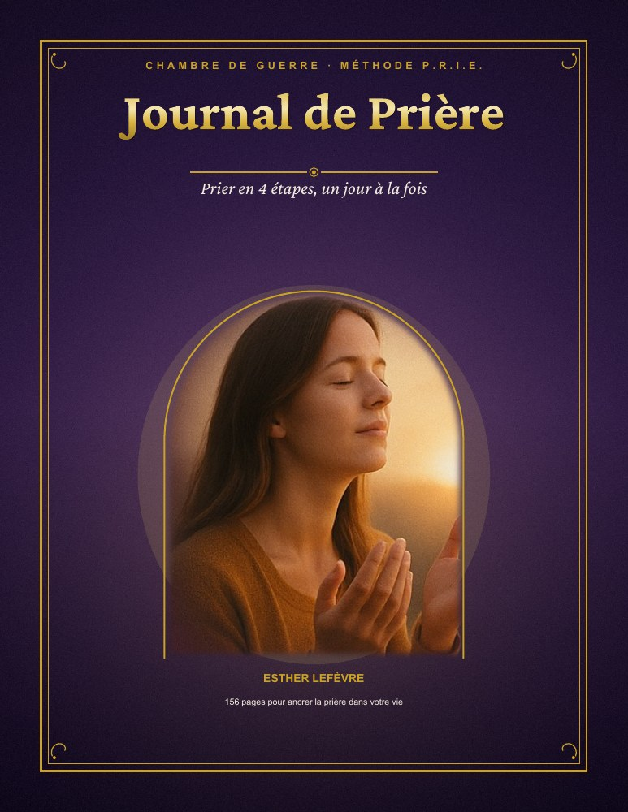
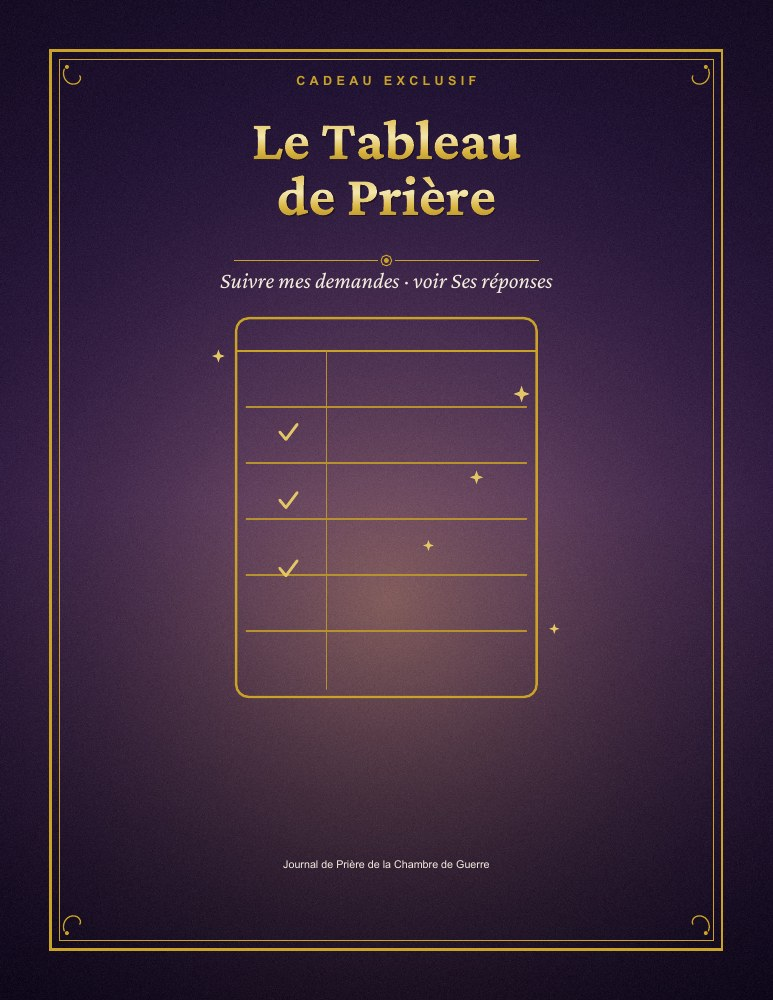
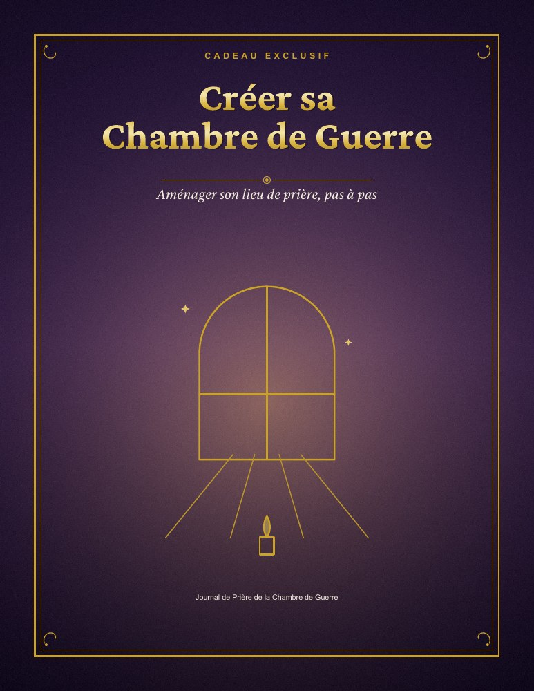
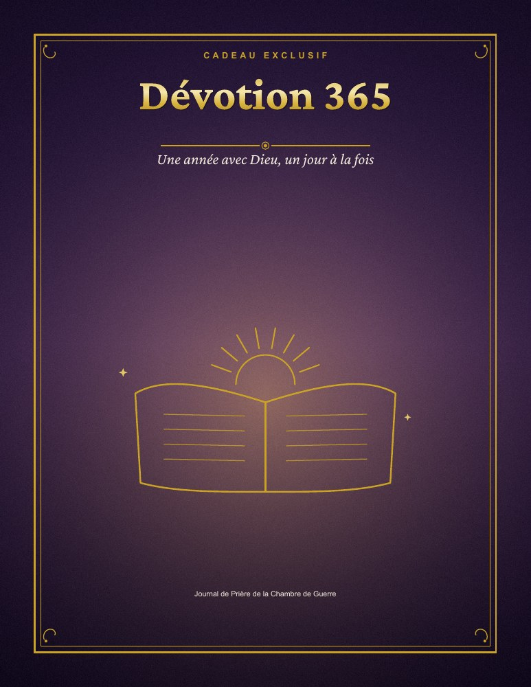
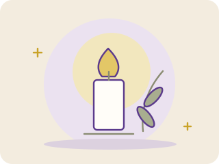

Trouver les mots pour prier
Appuyez-vous sur les versets et les étapes du journal pour commencer votre prière, même lorsque les mots vous manquent.
Découvrez les 4 étapes bibliques qui transforment un silence maladroit en une conversation vivante avec Dieu — jour après jour.




Une lettre pour vous
Chère sœur,
Pendant des années, j'ai voulu prier « comme il faut ». Je m'agenouillais, je fermais les yeux… et les mots s'évanouissaient. Je répétais toujours les mêmes phrases, je m'endormais, je culpabilisais. J'avais la foi, mais pas les mots — et cela me donnait l'impression que ma prière n'allait nulle part.
Tout a changé le jour où j'ai cessé d'improviser et où j'ai commencé à prier avec la Bible ouverte. J'ai remarqué que les prières exaucées dans les Écritures suivaient presque toujours le même chemin : entrer dans la présence de Dieu, reconnaître ce qui doit l'être, présenter ses demandes, puis rendre grâce et écouter.
J'ai rassemblé ce chemin en quatre étapes simples et je les ai écrites, page après page, jusqu'à en faire le journal que j'aurais aimé recevoir au début. Aujourd'hui, des milliers de femmes et d'hommes francophones prient avec cette méthode — et leur vie de prière n'a plus rien à voir avec le silence maladroit d'avant.
Ce journal n'est pas une formule magique. C'est un compagnon. Il vous prend par la main, étape par étape, pour que vous n'ayez plus jamais à vous demander « par où commencer ».
Esther Lefèvre
Auteure du Journal de Prière de la Chambre de Guerre
Ce que ce journal change
Fini de tourner en rond : chaque jour vous savez par où commencer et où aller.
« Fais-moi connaître le chemin où je dois marcher. » — Psaume 143:8
Vous ne cherchez plus vos mots : vous priez avec ceux, puissants, de la Parole.
« Ma parole… ne retourne pas à moi sans effet. » — Ésaïe 55:11
Un cadre doux et quotidien qui transforme la prière en habitude, pas en corvée.
« Priez sans cesse. » — 1 Thessaloniciens 5:17
Des prières sincères, structurées, qui vont au-delà des mots récités par habitude.
« La prière fervente du juste a une grande efficacité. » — Jacques 5:16
En notant vos prières et leurs réponses, vous voyez noir sur blanc la fidélité de Dieu.
« La foi vient de ce qu'on entend. » — Romains 10:17
Des temps d'examen qui apaisent le cœur et remettent l'essentiel au centre.
« Sonde-moi, ô Dieu, et connais mon cœur. » — Psaume 139:23
La méthode en 4 étapes
Le même chemin que suivent les prières exaucées de la Bible, résumé pour que vous puissiez le vivre dès ce soir.
Entrer dans la présence de Dieu par la louange et l'adoration, avant toute demande.
Reconnaître et confesser, le cœur apaisé, pour avancer sans poids.
Présenter vos demandes et porter les autres devant Dieu, avec des mots tirés des Écritures.
Rendre grâce, écouter, et noter ce que Dieu dépose dans votre cœur.
Votre chemin de prière
Quatre pratiques simples à explorer, un jour et une page à la fois.
Appuyez-vous sur les versets et les étapes du journal pour commencer votre prière, même lorsque les mots vous manquent.
Réservez quelques minutes pour lire, écrire et prier. Un cadre simple pour cultiver votre régularité, à votre rythme.
Notez ce qui vous préoccupe et les personnes que vous souhaitez porter dans la prière. Retrouvez vos intentions dans un même espace.

Revenez sur les moments de votre journée, notez vos sujets de reconnaissance et relisez votre cheminement au fil des pages.
Ce que vous recevez
Plus de 156 pages : prières tirées des Écritures, espaces pour écrire, et la méthode P.R.I.E. qui vous guide pas à pas.
Un plan visuel pour noter vos demandes, suivre les réponses et voir la fidélité de Dieu au fil des semaines.
Offert
Comment aménager, même dans un petit espace, un coin de prière qui vous appelle chaque jour.
Offert
Un verset et une courte méditation pour chaque jour de l'année, pour ne jamais rester sans point de départ.
Offert
Offre de lancement
Prix unique aujourd'hui
Valeur réelle 47 $
$9,99
Fichiers PDF — lisibles sur téléphone, tablette et ordinateur.
Un dernier mot
« Demandez, et l'on vous donnera ; cherchez, et vous trouverez ; frappez, et l'on vous ouvrira. »
Matthieu 7:7Vous n'avez pas besoin des mots parfaits. Vous avez besoin d'un chemin à suivre. Ce journal est ce chemin — et il vous attend dès maintenant.
Essayez le journal pendant 30 jours. S'il ne vous aide pas à prier avec plus de paix et de constance, écrivez-nous et vous serez remboursé intégralement — sans question, sans justification.
Questions fréquentes
Dès votre paiement, vous recevez un accès numérique immédiat : vous téléchargez le journal et les 3 cadeaux au format PDF, tout de suite.
Oui. Les fichiers PDF se lisent sur téléphone, tablette et ordinateur. Vous pouvez aussi les imprimer pour écrire à la main.
Le journal s'appuie uniquement sur les Écritures et sur la prière. Il convient à toute personne qui souhaite prier avec la Bible, quelle que soit son Église.
Vous êtes protégée par la garantie de 30 jours : remboursement intégral, sans condition, sur simple demande.
Oui. Chaque étape s'appuie sur des versets, et de nombreuses prières sont directement tirées des Écritures.
⚠️ Attention aux copies. Ce journal est vendu uniquement sur ce site officiel. Méfiez-vous de toute revente ou copie non autorisée : elle ne vous donnera ni les cadeaux, ni la garantie, ni les mises à jour.